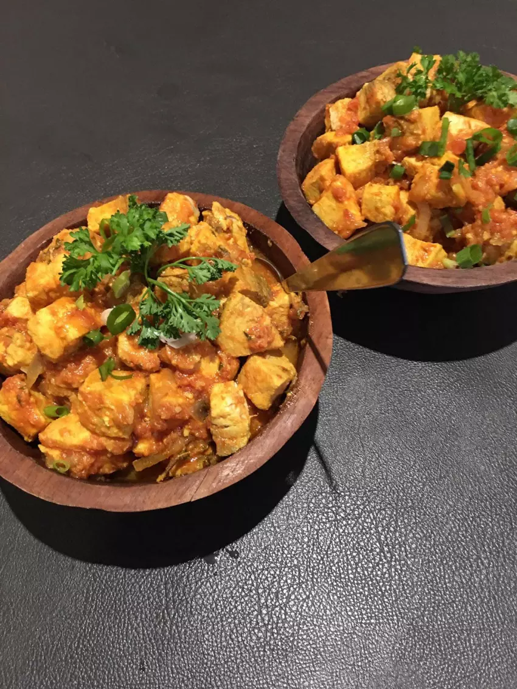
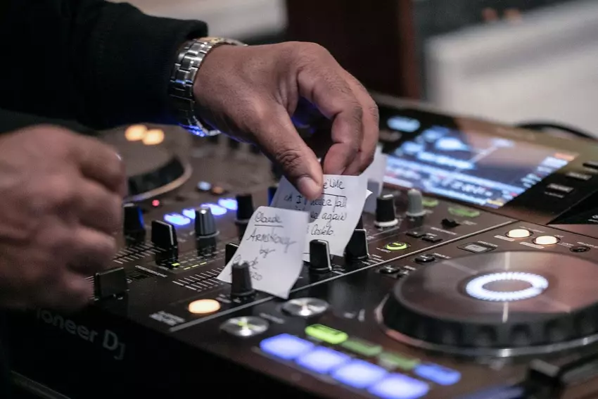
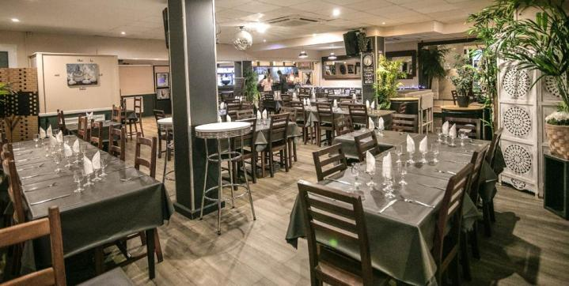
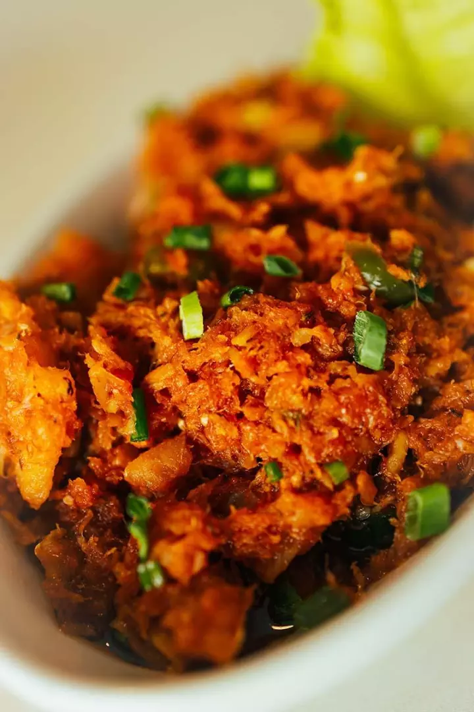
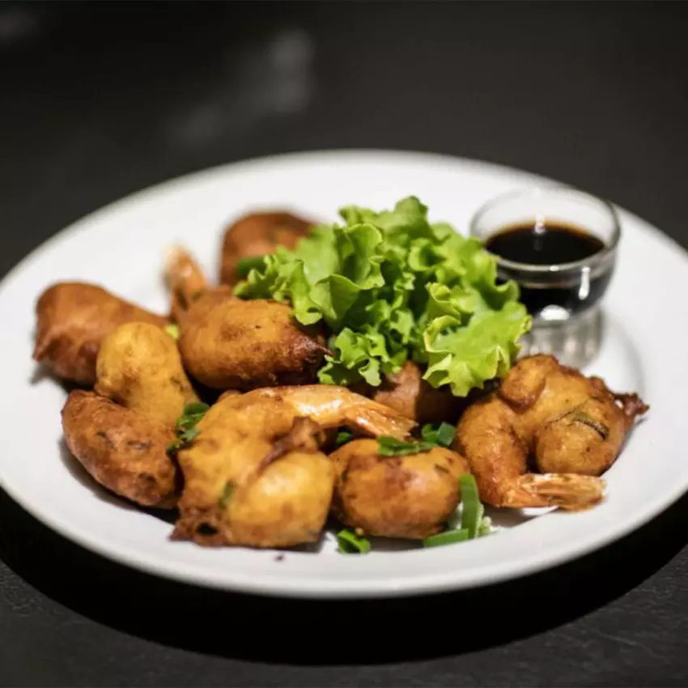
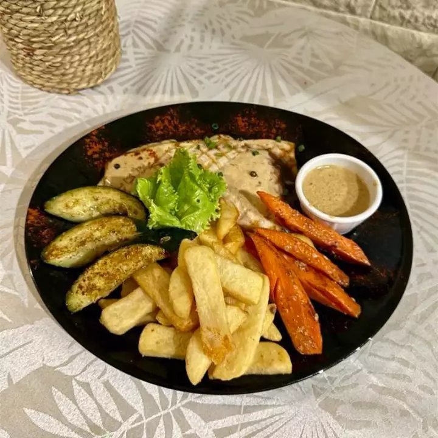
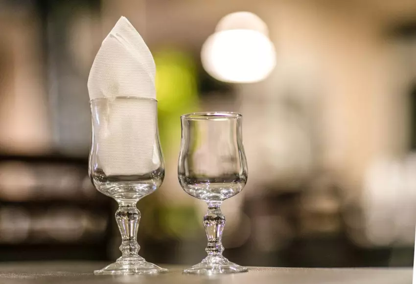
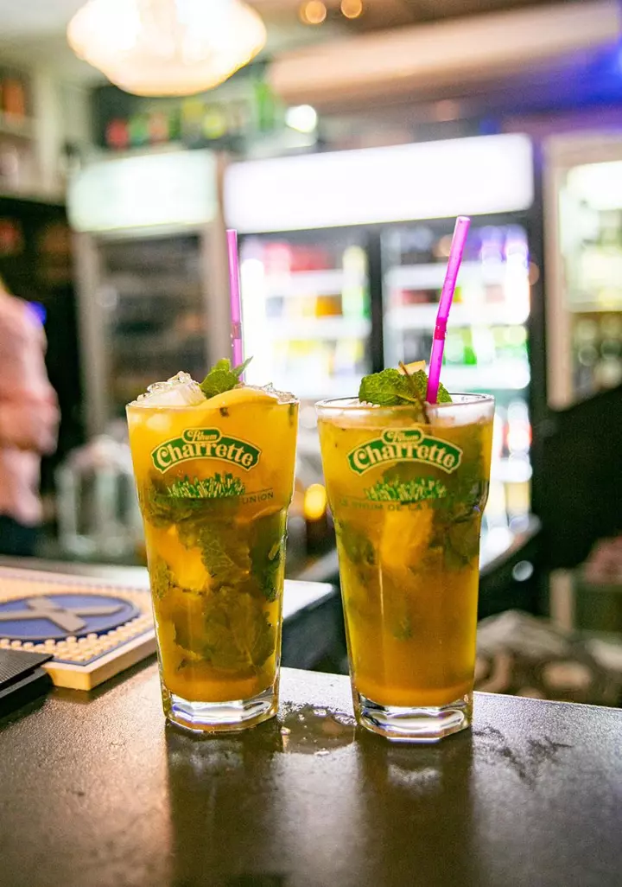

Restaurant familial à Saint-Denis. Cuisine créole et métropolitaine, salle privatisable, et des soirées qui ne ressemblent pas au reste de la semaine.


Une même maison
La maison
L'Unisson est un restaurant familial offrant une expérience culinaire incomparable depuis sa création. L'accueil chaleureux et le cadre familial vous feront vous sentir comme chez vous dès que vous franchirez notre porte.
L'ambiance conviviale qui règne ici crée un environnement propice aux échanges et aux rencontres. Des produits frais et de qualité, soigneusement sélectionnés, sont la base de notre cuisine.

À table
Les amateurs de cuisine créole et métro trouveront leur bonheur grâce à notre carte variée.





Les soirs
Les soirées sont l'occasion de voyager à travers les saveurs du monde, et notre salle peut être privatisée pour vos événements. Pour les repas d'affaires, notre menu élaboré saura impressionner vos partenaires et collaborateurs.
Quelle que soit l'occasion, choisissez le restaurant L'Unisson.
Nos atouts
Vous vous sentez comme chez vous dès la porte franchie.
Un environnement propice aux échanges et aux rencontres.
L'attention que nous portons à chaque client, à chaque visite.
Frais et soigneusement sélectionnés, base de notre cuisine.
14 Rue Charles Gounod
97400 Saint-Denis
09 70 35 41 41
Prix d'un appel local
Mer · Jeu · Dim
12h00 – 15h00 · 19h00 – 00h30
Ven · Sam
12h00 – 15h00 · 19h00 – 02h00
Lun · Mar — fermé
Réservation
Une table pour ce soir, un repas d'affaires, ou la salle entière pour votre événement — un appel suffit.
09 70 35 41 41